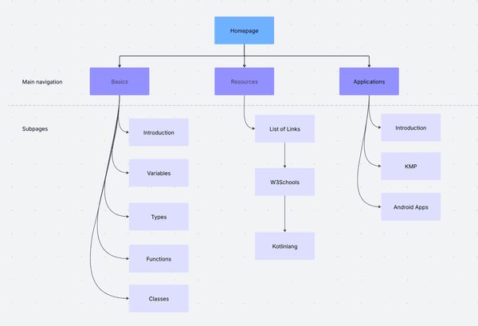
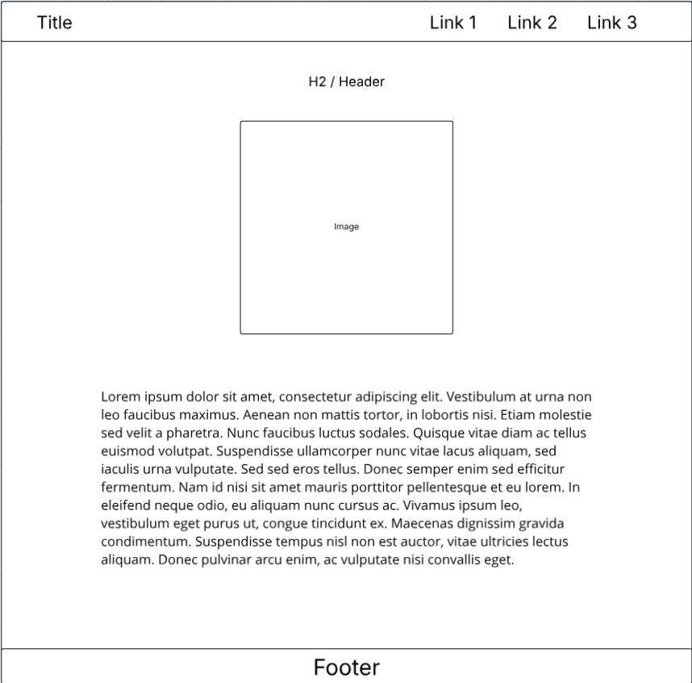

Client Project Overview
Project Overview
- Purpose: Learning about the programming language Kotlin.
- Intended Users: My Client.
- Overview of content: Information about the programming language Kotlin.
Client Information
- Name: Eric Matthew Carter-Barkman
- Associated with: University of North Carolina at Charlotte (STUDENT)
- Email: ecarterb@charlotte.edu
- Phone: [PRIVATE]
Site Map

Wire Frame

Basics -> Introduction
- Name of Page: Introduction
- Purpose: To introduce the user to Kotlin.
- Content: Basic information about the Kotlin language.
- Enter Data? (Y/N): No.
- Data validation? (Y/N): No.
- Contain links? (Y/N): Yes.
- Actions?: Will open a link in a new tab.
- Special Notes: N/A
Basics -> Variables
- Name of Page: Variables
- Purpose: To teach the user about variables in Kotlin.
- Content: Explain the difference between mutable and immutable variables in Kotlin.
- Enter Data? (Y/N): Yes.
- Data validation? (Y/N): Yes.
- Contain links? (Y/N): No.
- Actions?: The user will have a form/mini quiz where they can fill in a blank
- Special Notes: N/A
Basics -> Types
- Name of Page: Types
- Purpose: To teach the user about data types in Kotlin.
- Content: Infromation regarding types and nulls.
- Enter Data? (Y/N): No.
- Data validation? (Y/N): No.
- Contain links? (Y/N): No.
- Actions?: None.
- Special Notes: N/A
Basics -> Functions
- Name of Page: Functions
- Purpose: To teach the user about functions in Kotlin and the main function.
- Content: Information regarding functions.
- Enter Data? (Y/N): No.
- Data validation? (Y/N): No.
- Contain links? (Y/N): No.
- Actions?: None.
- Special Notes: N/A
Basics -> Classes
- Name of Page: Classes
- Purpose: To teach the user about classes in Kotlin and constructors for those classes.
- Content: Information regarding classes and constructors.
- Enter Data? (Y/N): No.
- Data validation? (Y/N): No.
- Contain links? (Y/N): No.
- Actions?: None.
- Special Notes: N/A
Resources
- Name of Page: Resources
- Purpose: Provide the user with links
- Content: Links to sites like Kotlinlang, w3schools, etc.
- Enter Data? (Y/N): No.
- Data validation? (Y/N): No.
- Contain links? (Y/N): No.
- Actions?: None.
- Special Notes: N/A
Applications -> Introduction
- Name of Page: Introduction.
- Purpose: To talk about the different ways Kotlin can be used.
- Content: Brief introduction to how Kotlin can be used.
- Enter Data? (Y/N): No.
- Data validation? (Y/N): No.
- Contain links? (Y/N): No.
- Actions?: No.
- Special Notes: N/A
Applications -> Kotlin Multiplatform (KMP)
- Name of Page: KMP
- Purpose: Introduce the user to KMP.
- Content: Introduction of Kotlin Multiplatiform and what it is.
- Enter Data? (Y/N): No.
- Data validation? (Y/N): No.
- Contain links? (Y/N): No.
- Actions?: No.
- Special Notes: N/A
Applications -> Android Apps.
- Name of Page: Android Applications.
- Purpose: Introduce the user to how Kotlin powers Android apps.
- Content: Infromation about Androids apps running on Kotlin
- Enter Data? (Y/N): No.
- Data validation? (Y/N): No.
- Contain links? (Y/N): No.
- Actions?: No.
- Special Notes: N/A